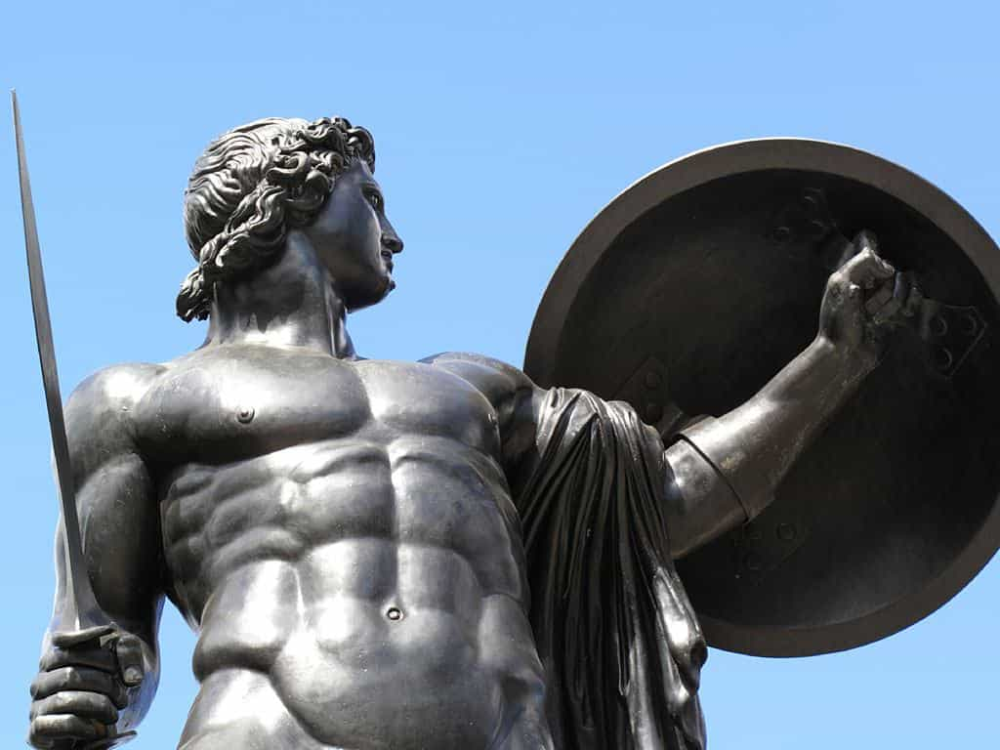
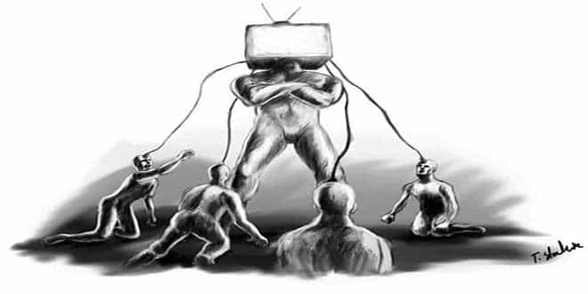
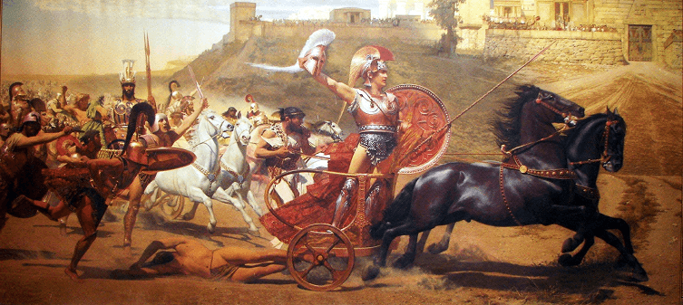

Sten is an internationally renowned social media premium content creator and author of Networking for NEETs. He is known for his acerbic social commentary, effortless synthesis of high and low culture, and patronage of the NEET lifestyle.


The minds of Western men have become calcified through the years due to repeat exposure of the same lies, convenient half-truths, and disinformation campaigns. Our media, academia, and politics have become so full of these pestilent falsehoods that one is hard-pressed to name a significant, positive contribution to the Western canon from recent years.
While Return of Kings and associated online communities excel in providing men with actionable advice, a truly novel work of philosophy has yet to emerge. However, all of this changed recently upon the release of Bronze Age Mindset by Bronze Age Pervert: a work of stunning clarity that provides men with a distinct path forward to usher in a glorious new era of Western thought.
Who is Bronze Age Pervert? In truth, nobody knows for certain. Some say he worked as Steve Bannon’s contact within the White House. Some say he rode with Achilles on the wind-swept plains of ancient Troy. Others still insist that he’s part of all of us: the indomitable spirit of ancient man incarnate. Whoever or whatever Bronze Age Pervert is comes second to his vision and how you can apply it to your own lives.

Anyone who has taken the Red Pill knows how difficult it is to convince others to see the truth. These days, people are so ingrained in their own false beliefs that it seems impossible to help friends and loved ones along the right path. Bronze Age Mindset advocates that before revealing the truth about reality to someone, you must first prescribe them a course of “sun & steel.” Here, in this allusion to Japanese author and bodybuilder Yukio Mishima, Bronze Age Pervert refers directly to sunlight and weightlifting.
It’s no secret that men who hold far left wing views are weak, pale, and timid creatures. Take a look at the body politic of any major American urban center and you will observe that weakness of mind and body leads to a weakness of spirit. This causes such men to adopt a mindset of victimhood and makes them susceptible to the progressive ideologies that seek to exploit this.
Thankfully, this can be remedied by stepping out of the office, getting some sunlight, and hitting the gym. A man dedicated to improving his physical health will soon cast off such ideologies of weakness as he develops confidence and mastery over himself. In time, he will grow more willing to adopt proper ideas about masculinity.

The men of antiquity were exemplars of power, wisdom, and courage. When the Greeks defeated the Persians at the Battle of Marathon, they immediately ran twenty-six miles—clad in full armor—back to Athens to prevent the landing of additional Persian forces. These types of manly feats are discussed in detail in Bronze Age Mindset, and examples are provided on how you can use these historical events to become powerful in your own life.
While we may never be as great as the heroes of lore, there is no reason to despair. The world is large and full of opportunity. It is essential that a man find his calling from within and pursue it obsessively. What this means for you will vary: perhaps you wish to be a professional athlete, a renowned physicist, or master woodcrafter. Whatever your calling is, you can draw inspiration from the men of the past who accomplished great deeds.
A man separated from his history is a man without roots. By reading about great men, we learn that anything is possible with the right discipline and application of effort. Bronze Age Mindset contains such stories and serves to guide you along your own path to greatness.

Though taking the Red Pill puts you on the path to truth, it is a mere entryway into dispelling the lies you have been told since infancy. Many men find the PUA community after having realized that the advice they were given concerning women results more often than not in abject failure. However, the truth about masculinity and femininity is just the beginning.
We are told in secular societies that science is to be our new religion. We are told we must believe in everything scientific experts claim and that those who don’t are flat-earth fundamentalists who think Jesus walked with dinosaurs. But, science as it is practiced today is just another institution that has been corrupted by progressive thought, moneyed interests, and corporate lobbying.
Take, for example, the lies we were told about the purported healthfulness of soy and soy-based products. Much of this was disinformation by large agribusiness to reduce the quality of the food supply and cause permanent, testosterone-decreasing endocrine damage to men. This is but one of the many lies we were told. Bronze Age Mindset takes this concept further, exposes modern science for what it has become, and explains how men can retake control of technological innovation.

Loneliness is an epidemic in the United States. Though this phenomenon has traditionally affected the elderly, it’s become increasingly common in young men. Many young men do not have close friends, let alone girlfriends or wives. It’s clear from the recent “incel” phenomena that this has potentially deadly results for civilization.
Bronze Age Mindset advocates for the return of the heroic friendship. Many such friendships were formed in battle: Achilles and Patroclus, Alexander and Hephaestion, and many others. Modern academics are quick to dismiss these relationships as “homosexual” because they are both incapable of comprehending male friendship and fear the return of what two devoted heroic friends can accomplish.
Here, Bronze Age Pervert stresses the importance of forming your own band of men to achieve great tasks. Many in the PUA community also share this sentiment, and responses to mere happy hour meetings of likeminded masculine men have been met with harsh criticism, violent protest, and even travel bans from certain countries. It is clear that what the powers that be fear the most is the heroic friendship; the unbreakable bond of great men set on achieving a common, noble cause.
In conclusion, Bronze Age Mindset marks the beginning of a new era of Western thought. Bronze Age Pervert guides us through the past to show us how we might learn from it and apply ancient wisdom to create a better future for ourselves. His ideas are novel, compelling, and show us that we are finally at the dawn of something greater than us all.
Read More: Do You Have A Loser Mindset?